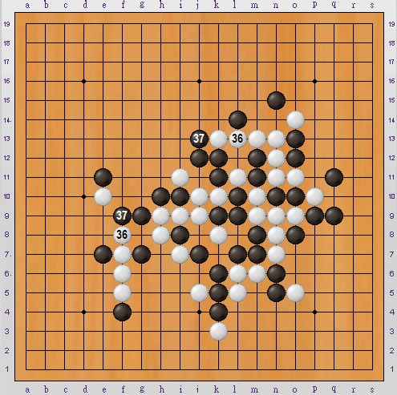

规则与基本取胜手段：
对局室：http://www.renrousousuo.com/DoubleLine.aspx
“双线五子棋”玩家棋谱列表：
http://www.renrousousuo.com/Players/DoubleLine.aspx
点击用户名字，然后点击“回放”就可以看所有玩家的动态棋谱了。
对局室刚建成不久，玩的人还不多，建议大家晚上来玩。
有兴趣的可加“谈五论六”群 104416223，群里约战。
本人也是新手，玩了三十多盘，觉得非常有意思！！
总结了一些小经验，跟同样是初学者的大家分享：
**虽然每次下两子，但开局跟传统五子棋基本一样，是活二与活三的争斗；
**开局白2只要不离开太远，黑棋基本上没啥优势；
**取胜以抓禁为主，禁手无处不在；
**抓禁范围很大，隐蔽性高，非常考验眼力；
**中盘如果有眠三，那是非常好的抓禁资源，要紧盯着双方的眠三，留意是否有抓禁点；
**冲四与活三的配合常常会巧妙抓禁，看计算和棋感了！
**目前还没出现过和棋，死守是绝对不行的：
一不留神你就被抓了
本题取材于实战，略经修改而成。
白先，请问如何抓禁？
答案附于下帖
［此帖子已被 日出333 在 2010-12-25 22:11:20 编辑过］
答案如下：
白30冲四活三，逼迫黑31防守（注意：q11不能堵m7，否则同线）
白32冲四活三，逼迫黑33防守（注意：q9不能堵m13，否则同线违禁）
白34继续冲四活三，逼迫黑35防守（注意：f4不能堵f8）
白36抓禁成功！（注意：黑37在同一条线上）

下图取材于另一个实战。
黑35冲四活三，意图是等白棋堵住后，黑棋接着下h12、n8，用两个冲四来抓白棋的禁手。
白棋看出了黑棋的意图，36不挡活三，用冲四来解围。由于黑棋被迫堵p4，其活四点p5暂时被禁。
黑37走m11的意图如下：
上图，如果白38这样挡，黑39便可以抓禁（抓禁点在n线）；
上图，如果白38改为这样挡，黑39仍然可以抓禁。
白方看出黑棋意图，经过长考，再次弈出了解禁妙手：o2 ！！

因为 o2 一子，黑棋被逼挡 n3 ，之后便无法落子于p5、n8、n11、h9……
非常巧妙的连续解禁手法！
［此帖子已被 日出333 在 2010-12-26 13:46:39 编辑过］